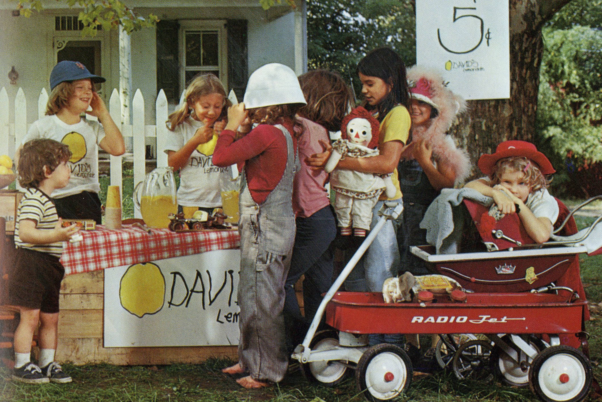

Nous avons eu l'idée d'organiser des dégustations privées, "VIP", de citronnade partout en France, à la façon des négociants en vin. L'idée : "redonner le goût du fruit, le goût du bio, les bienfaits de la citronade aux consommateurs"

David's Lemonade était une entreprise américaine qui a répendu ce que tous les enfants américains ont connus dans les années 50, les stands de limonade à 5 cents.
En effet, pour gagner de l'argent de poche, les enfants montaient des stands de limonade.

Le succès fût énorme, mais malgré celà, l'entreprise à aujourd'hui disparue. Toutefois, nous souhaitons faire renaitre l'idée, à notre façon.

La citronnade est une boisson saine, mettant en avant le goût unique des différents agrumes frais et bio de production locale, elle est donc tout à fait dans l'air du temps.

De plus, les producteurs adhérents seront présents lors des dégustations pour défendre la qualité de leurs produits.